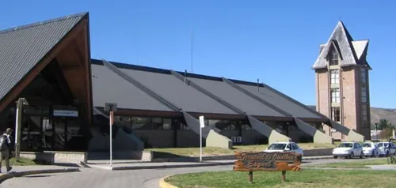

El lugar donde iba a ir Jeremy Wade quedaba cerca de trevelin y nosotros estábamos lejos de ya que vivíamos en Esquel, a unos 25 km.
Nuestro viaje comenzó agarrando un colectivo en la terminal de ómnibus Esquel, a las 07:00 am del día 23 de mayo. Llegamos tarde a la terminal, pero llegamos.
En el colectivo era un asiento muy cómodo, pero lamentablemente, con la tardanza tuvimos que viajar parados. El colectivo era con aire acondicionado ya que afuera hacía mucho calor, no tardamos mucho, a las 07:35 am estábamos en el lugar.